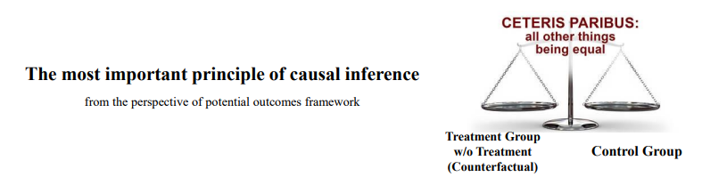
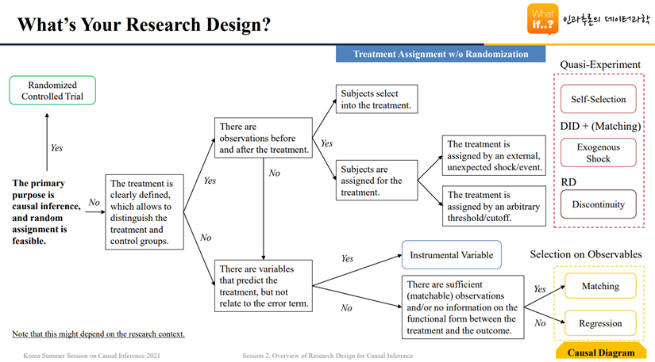
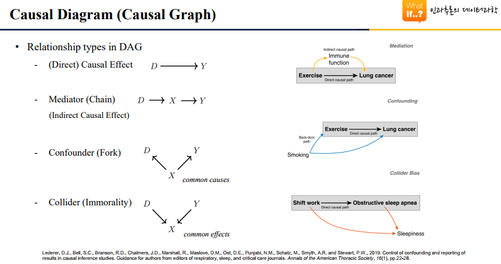
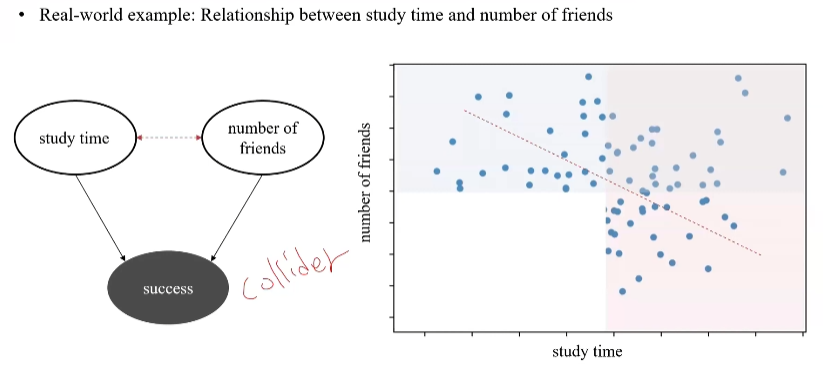
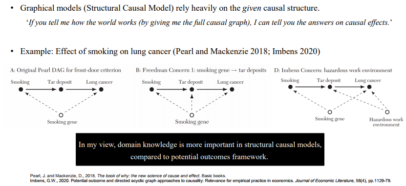
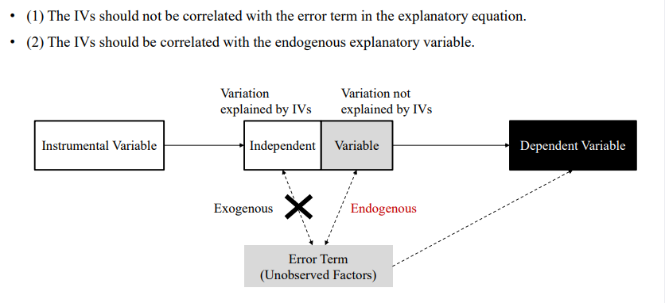
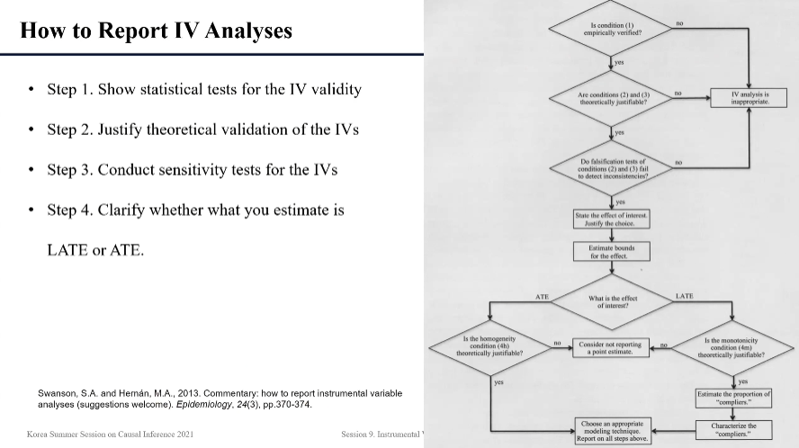
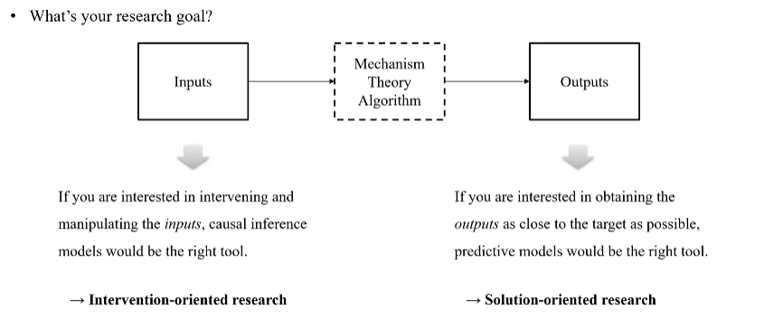
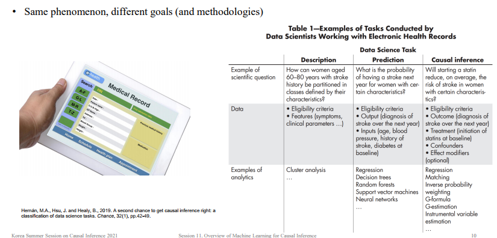
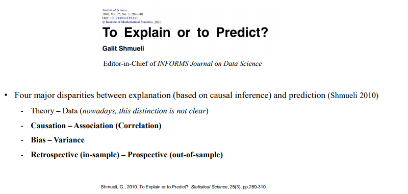

Korea Summer Session on Causal Inference 2021
Module 1. Research Design for Causal Inference
Session 1. Potential Outcomes Framework: Causal Mindset
- Potential Outcomes Framework
- Causation is defined as the difference in potential outcomes after the treatment.
- Causal effect of the treatment
= (Actual outcome for treated if treated) – (Potential outcome for treated if not treated)
- Average Treatment Effect (ATE) on the Treated (ATT)
- By definition, potential outcomes are not always observable. The fundamental challenge in causal inference is that we do not observe both potential outcomes; we only observe one.
- But, in reality, we can only observe
= (Actual outcome for treated if treated) – (Actual outcome for untreated if not treated).
- Selection Bias
- In reality, any treatments are not assigned randomly. Individuals select the treatment (but we don’t know why).
- As a result, the treatment and control groups may be systematically different and there by not be comparable.
- Selection bias is the systematic difference between the treatment group in the absence of treatment (counterfactual) and control groups.
- Decomposition of causal effect and selection bias
- Observed effect of the treatment = Causal effect + Selection bias
- From the perspective of potential outcomes framework, causal inference is to remove the selection bias.
- How? the treatment group should be comparable to the control (untreated) group in the absence of treatment.
- Causal inference is to take advantage of research designs in which the control groups are comparable to the treatment groups in all aspects, on average, but the fact that they are treated or not.

Session 2. Overview of Research Design for Causal Inference

- Gold Standard of Causal Inference: Random Assignment
- Relying on the law of large numbers, random assignment ensures that the subjects with various characteristics are distributed evenly across the treatment and control groups, so that they are comparable.
- Experimental Setting without Random Assignment: Quasi-Experiment
- Quasi-experiments mimic the randomized experiment by assigning the treatment and control groups based on an exogenous shock, self-selection, or an arbitrary cutoff, instead of random assignment.
- The goal of quasi-experiments is to seek the comparable control group and infer the counterfactual from the control group.
- Tools for Analyzing Quasi-Experiments: Difference-in-Differences and Regression Discontinuity
- For DID analysis, the parallel trends assumption (in the absence of treatment) must be hold.
- Once again, the goal of quasi-experiments is to seek the comparable control group and infer the counterfactual from the control group.
- Matching techniques are useful to compose the control group that is close to the treatment group in terms of observed variables.
- There are two approaches for matching the treatment and control groups.
- Propensity score matching (PSM)
- Coarsened exact matching (CEM)
- Regression discontinuity is to identify the local discontinuous jump on a running (assignment) variable.
Session 7. Graphical Model of Causal Relationships
- Causal Diagram: Directed Acyclic Graph (DAG)

- Two nodes are associated if they share the same information.
- Information of nodes flows in the direction of edges.
- The paths for noncausal associations (except direct and indirect causal effects) are called backdoor paths.
- X and Y are d-separated if there is no information flow between X and Y.
- All paths between X and Y are blocked
- X and Y are d-connected if there is information flow between X and Y.
- Not all paths between X and Y are blocked.
- As they are, mediators and confounders do establish an association between nodes, but colliders do not.
- After conditioning on them (controlling for, or blocking), mediators and confounders does not establish an association between nodes, but colliders do.

- How to Condition on and Control for Factors
- Control variable in regression
- Postulates the fixed relationship between the focal factor and the outcome (with a specific functional form)
- Stratification (≅ Matching)
- Postulates the fixed value of the focal factor and thereby the fixed effect on the outcome (without any functional forms)
- Inverse Probability Weighting (IPW)
- Gives weights to observations according to the likelihood of being treated

Session 9. Instrumental Variables
- Three Perspectives on Causation
- (Potential Outcomes Framework) The enemy of causal inference (selection bias) arises due to systematic differences between the treatment and control groups.
- (Structural Causal Model) The enemy of causal inference (noncausal association) arises due to backdoor paths from un-conditioning confounders or conditioning colliders.
- (Statistics: Regression) The enemy of causal inference (endogeneity) arises when the independent variable is correlated with the error term (capturing all unobserved factors that could influence the dependent variable).
- Endogeneity (Selection Bias) in Regression
- To interpret the regression in a causal manner, the independent variable (cause) should not be correlated with the error term capturing all unobserved factors that could influence the dependent variable (effect)
- In most observational studies, it is realistic to assume everything is endogenous.
- Taking the Selection Bias Out: Instrumental Variable (IV)
- Instrumental variables are an instrument to separate the exogenous portion of the independent variable from the endogenous portion (selection bias) out.
- First Approach: Two-Stage Least Squares
- For causal effect estimation, let’s take the endogenous portion (selection bias) out of the independent variable and use only the exogenous portion.
- Second Approach: Control Function
- For causal effect estimation, let’s control for the endogenous portion (selection bias) of the independent variable.

- Local Average Treatment Effect (LATE)
- What we can estimate using IV is the causal effect of the predicted portion of the treatment.
- IV estimate is the Local Average Treatment Effect (LATE) for the compliers (cooperative subjects).
- LATE requires the monotonicity assumption (i.e., no defiers exist).
- Depending on compliers, different IVs may yield different estimation results.

Module 2. Machine Learning for Causal Inference
Session 11. Overview of Machine Learning for Causal Inference



- Predictive modeling aims to obtain the closet prediction to the target (Y) by minimizing the MSE (combination of bias and variance), occasionally sacrificing the true causal relationship for improved empirical precision.
- Causal inference for explanation aims to obtain the most accurate representation of the underlying true relationship by minimizing bias.
- Different goals need different methodologies.
Session 13. Causal Applications of Machine Learning Models
Session 14. Heterogeneous Treatment Effect Estimation Using Machine Learning
Session 15. Causal Decision Making and Prescriptive Analytics
Session 16. Causal Inference under the Rubric of Structural Causal Model
Session 18. Synthetic Control / Causal Discovery